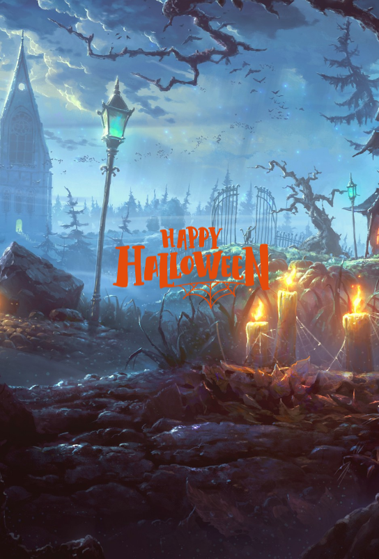

Hello, This is Abdullah Naifeh’s Website.
In his role as a Front-end web Developer, Abdullah projects remarkable passion and expertise.
RefuBook

MadLibs

In his role as a Front-end web Developer, Abdullah projects remarkable passion and expertise.
A front-end web developer based in Istanbul that's trying to make the web more accessible, useful and easy to use.
I am a passionate Front-end developer. Experienced in HTML, CSS, JavaScript, and React, I strive to provide clients with outstanding user experiences. With strong teamwork skills and a background in Business Communications, I effectively merge technical expertise with effective communication skills. I am always eager to expand my skills and stay up to date.
I am really passionate about exploring the blend of digital and physical experiences. Growing up alongside the internet, it has significantly influenced my identity. This influence drives me to contribute to making opportunities fairer and shifting power and value towards decentralization. I am also keen on ensuring user-friendliness and accessibility. I strongly hold the belief that making information, technology, and value accessible in an equitable and decentralized manner can profoundly transform our world into a more just and inclusive one.
I am curious and problem solver by nature, I often lose track of time when I dive into learning and exploring new subjects that pique my curiosity, if I'm not coding, I enjoy hanging out with people, playing sports, or spend time planning out my next adventure, I also enjoy figuring out new interests that fuel my creativity and inspire me to create the future...
I took on the challenge of a Front-End development boot camp offered by Re:coded, an opportunity that wasn't easy to secure with its highly selective 4% acceptance rate. Once given the chance, I immersed myself in learning the art of crafting and enhancing web applications. Collaborating within teams, I gained valuable experience and worked cohesively to achieve our shared objectives.